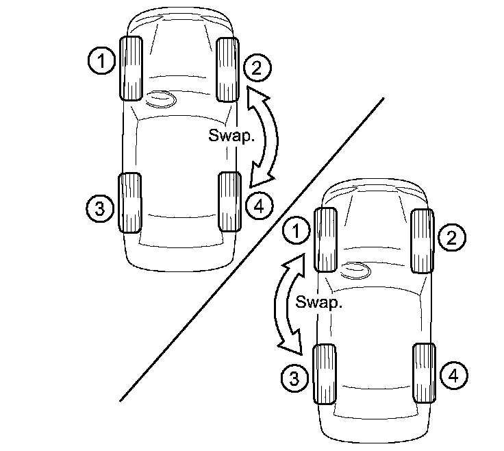
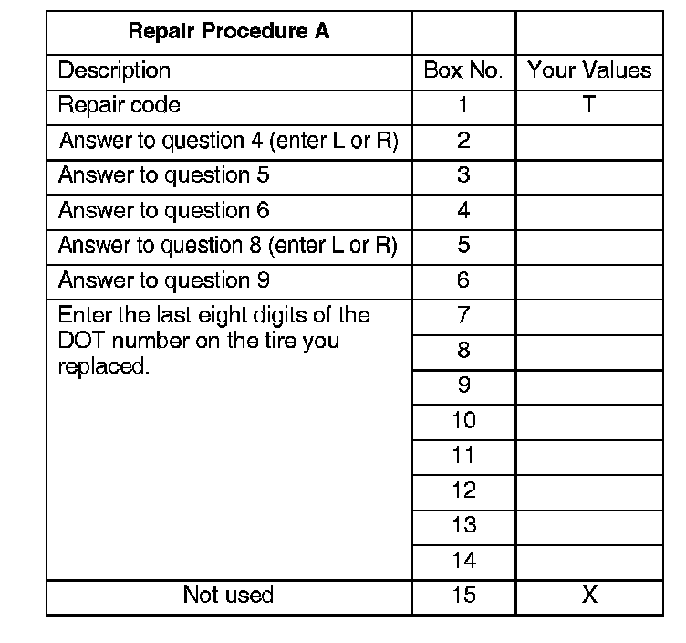

Repair Procedure A

NOTE:
Do this repair procedure if, after doing step 10 of the test-drive, the vehicle pulled in the opposite direction after you swapped the front tires.
1. Swap tires 2 and 4 on the passenger's side of the vehicle, and test-drive again.
^ If the pull goes away, replace tire 2, then go to step 3.
^ If the pull does not go away, put tires 2 and 4 back to their original positions, and go to step 2.
2. Swap tires 1 and 3 on the driver's side of the vehicle, and test-drive again.
^ If the pull goes away, replace tire 1, then go to step 3.
^ If the pull does not go away, use a known-good tire in position 1 and continue the diagnosis.

3. Use your diagnostic worksheet to fill in the table and build your 15-digit DTC.